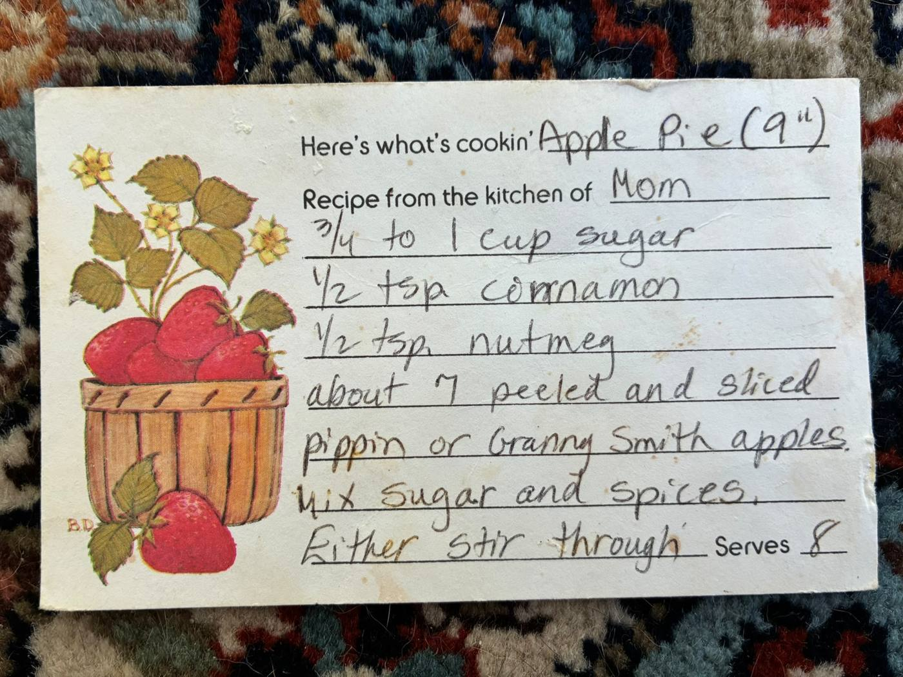
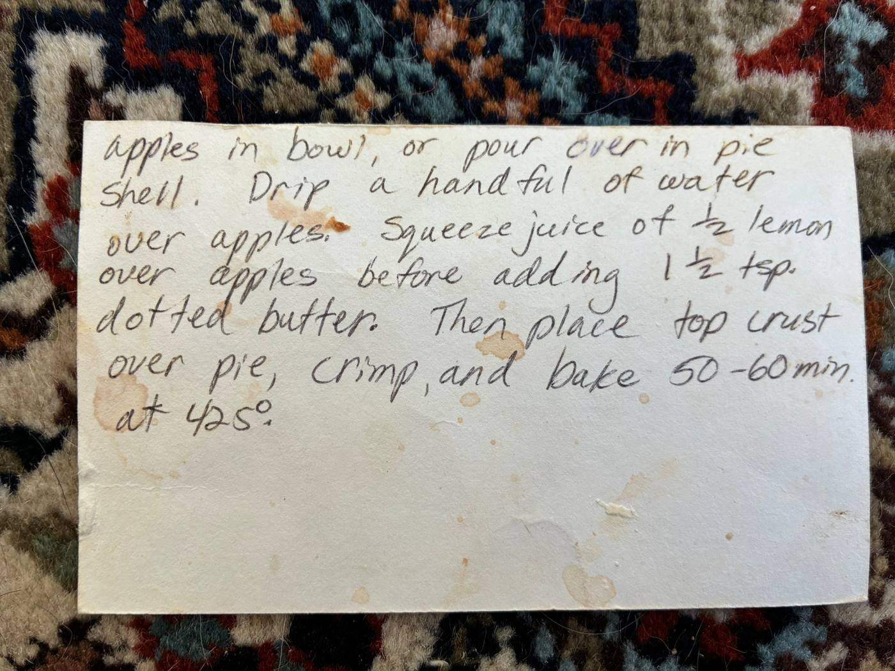

Desserts
Apple Pie
From the kitchen of Mom
Oven425°F
Bake50–60 min
Size9-inch pie
Serves8


Mom's original card (front and back) · tap to enlarge
Ingredients
Filling
Crust
Method tap a step to mark it done
- Peel and slice about 7 pippin or Granny Smith apples.
- Mix the sugar and spices.
- Either stir the sugar mixture through the apples in a bowl, or pour it over the apples in the pie shell.
- Drip a handful of water over the apples.
- Squeeze the juice of ½ lemon over the apples, then dot with 1½ tsp butter.
- Place the top crust over the pie and crimp.
- Bake at 425°F for 50–60 minutes (start checking at 50).